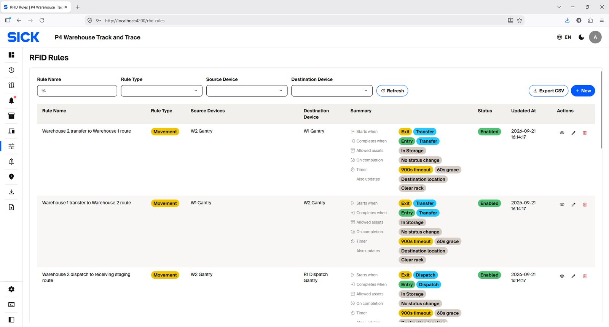
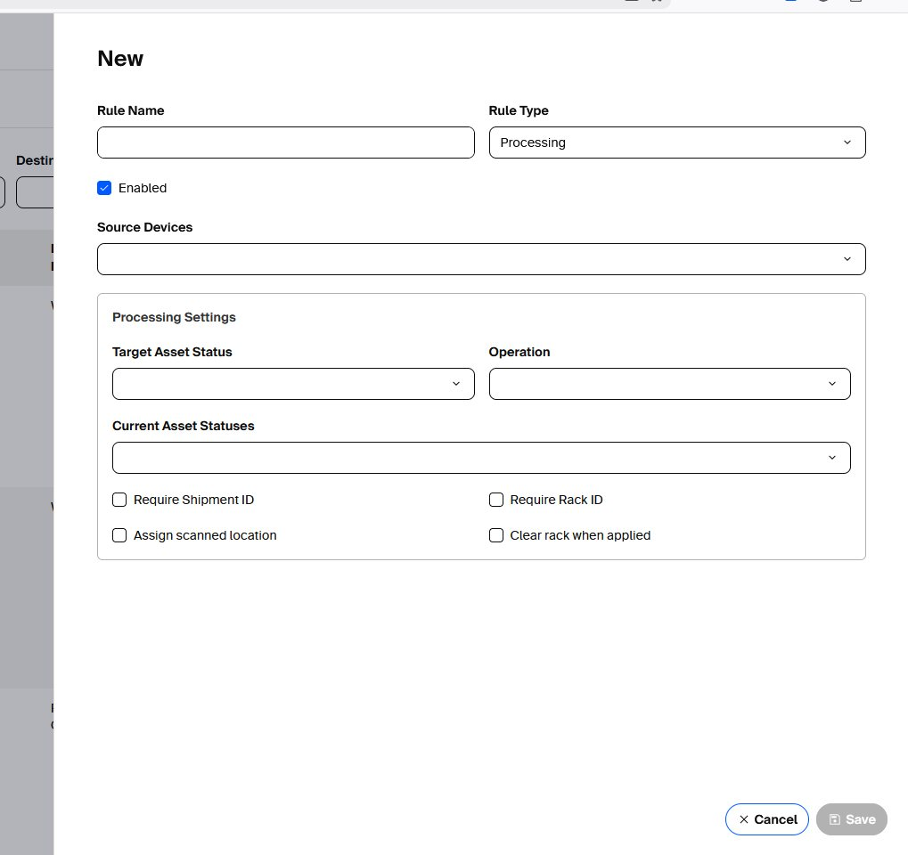
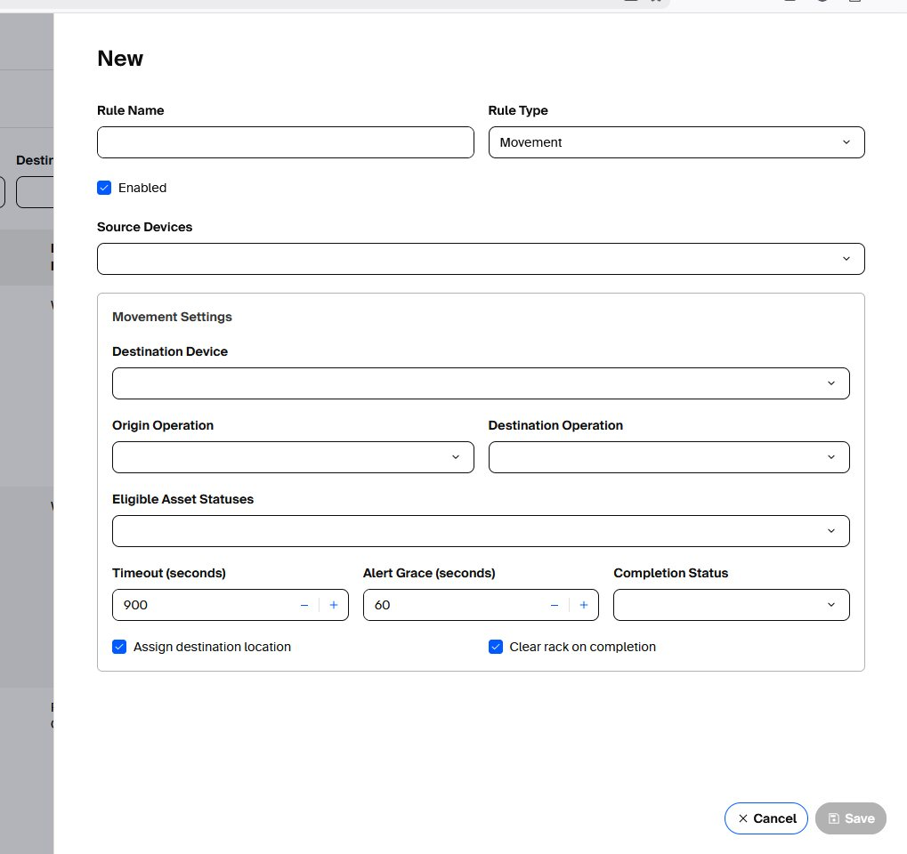
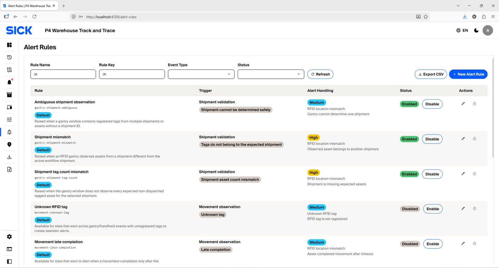
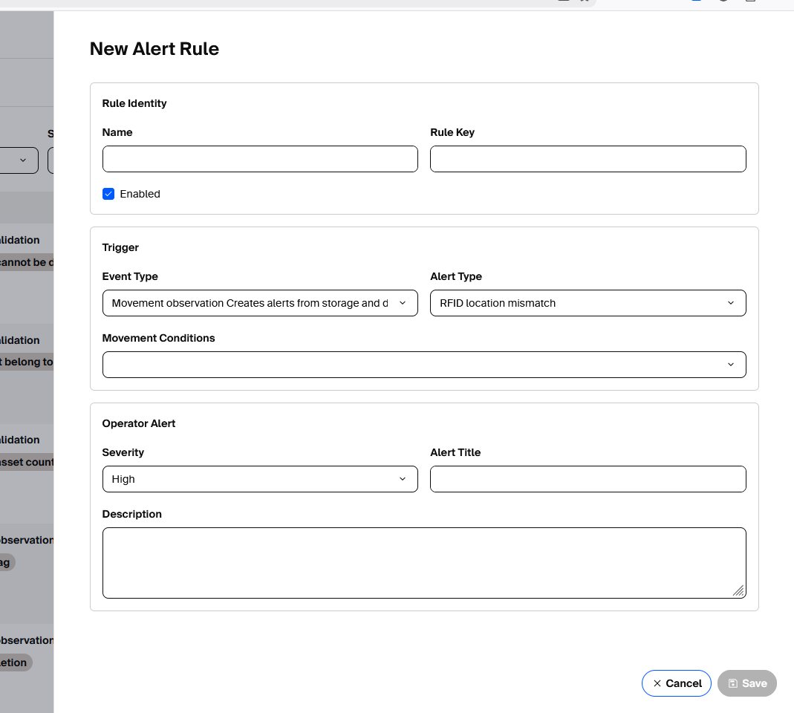

RFID Rules & Alert Rules
Processing Rules apply direct Asset updates from trusted operations. Movement Rules validate planned source-to-destination movement. Alert Rules decide which validation failures create user alerts.
Rule types and when to create them
Create a new rule only when the required workflow, route or alert condition is not already covered by an existing enabled rule. Prefer updating an existing rule when the same operational behavior is changing. Avoid duplicate or overlapping rules because one RFID event should resolve to one clear system action.
| Rule type | Definition | Typical use | Create a new rule when... |
|---|---|---|---|
| Processing Rule | Defines how one accepted operation from selected source Device(s) directly updates an Asset. It can validate the current Asset status, require Shipment/Rack information, set a target status, assign the scanned Location/Rack, or clear the Rack. | Handheld RECEIVE, Handheld STOCK_TAKE, Dispatch Checkout, or the final dispatch transition. | A new trusted Device/application operation must perform a direct Asset state/location update and no existing Processing Rule already matches that operation and source. |
| Movement Rule | Defines a valid planned physical route between source and destination observations. It matches the source Device/direction, destination Device/direction, operation and eligible Asset status, then applies the configured timeout and completion behavior. | Storage movement from the receiving/dispatch area to a Warehouse, or Dispatch movement from a Warehouse to the configured dispatch staging area. | A new approved route, Gantry pair, source/destination combination, direction pattern, timeout, or completion behavior is introduced and the route has been separately validated for operation. |
| Alert Rule | Converts a supported validation condition into a user-facing Alert. It defines which condition should notify users and how the Alert is presented, including severity, title and description. | Invalid source/destination/route, out-of-order movement, timeout, Shipment mismatch, tag-owner conflict, or another supported validation condition. | Users need a notification for a supported condition that is not already covered by an existing Alert Rule, or a separately validated workflow requires its own clearly defined alert behavior. |
Processing Rule vs Movement Rule:
use a Processing Rule when one accepted operation is enough to
perform the required Asset update. Use a Movement Rule when the
system must validate a physical route using both source and
destination observations.
Do not create rules just because a new Device is added.
Create a new rule only when that Device introduces a new
operational behavior or route that is not already covered. If the
Device should behave exactly like an existing source and the rule
supports selecting multiple source Devices, add it to the existing
rule instead of creating a duplicate.
Before creating a new rule
- Check the existing enabled rules for the same operation, Device(s), route and Asset status.
- Confirm that the new workflow or route is approved and tested for the site.
- Use the narrowest Device/status/condition scope needed to avoid ambiguous matches.
- For Movement Rules, verify source/destination direction, timeout and completion behavior with the real Gantry flow.
- For Alert Rules, confirm that the condition is not already covered by another enabled rule.
- Create the rule disabled when possible, test it with a known Asset/workflow, then enable it for operational use.
Update instead of creating a duplicate when:
the same rule purpose remains valid but a Device selection,
eligible status, timeout, severity, title or another configuration
value needs to change. After any rule change, repeat the relevant
controlled workflow test.
Default RFID rules — reference configuration
The default rules shown here describe the reference site
configuration. They are not a fixed limit on the number of
Locations, Devices, Gantries, or movement routes. When the
deployment expands, create or update rules for the additional
configured paths while avoiding overlapping or ambiguous matches.
| Rule | Type | Source / route | Operation | Eligible current status | Result | Important behavior |
|---|---|---|---|---|---|---|
| Handheld receive stores asset in scanned rack | Processing | Handheld scanners | RECEIVE | RECEIVED | IN_STORAGE | Rack required; scanned location/rack assigned. |
| Handheld stock take stores asset in scanned rack | Processing | Handheld scanners | STOCK_TAKE | RECEIVED / IN_STORAGE | IN_STORAGE | Rack required; confirms/updates storage. |
| Checkout stages outbound dispatch | Processing | R1 Checkout Reader | DISPATCH | IN_STORAGE / READY_FOR_DISPATCH | READY_FOR_DISPATCH | Shipment required; clears rack. |
| R1 dispatch gantry finalizes outbound dispatch | Processing | R1 Dispatch Gantry | DISPATCH + EXIT | READY_FOR_DISPATCH | DISPATCHED | Final outbound transition. |
| Storage movement: R1 → Warehouse 1 | Movement | R1 Dispatch Gantry → W1 Gantry | RECEIVE | RECEIVED | Movement completion | Origin EXIT; destination ENTRY; 900 s timeout. |
| Storage movement: R1 → Warehouse 2 | Movement | R1 Dispatch Gantry → W2 Gantry | RECEIVE | RECEIVED | Movement completion | Origin EXIT; destination ENTRY; 900 s timeout. |
| Warehouse 1 → R1 dispatch staging | Movement | W1 Gantry → R1 Dispatch Gantry | DISPATCH | IN_STORAGE | Movement completion | Shipment required; EXIT → ENTRY; 900 s. |
| Warehouse 2 → R1 dispatch staging | Movement | W2 Gantry → R1 Dispatch Gantry | DISPATCH | IN_STORAGE | Movement completion | Shipment required; EXIT → ENTRY; 900 s. |
Approved movement scope The documented default
movement rules cover the currently approved Storage and Dispatch
flows. Other movement patterns are outside the approved operating
scope of this manual unless they are separately validated and
released.

Create a Processing rule
Create a new Processing Rule when:
a new approved Device/application operation must directly update
Asset status/location/rack and the existing Processing Rules do not
already provide that behavior.
- Select RFID Rules → New and choose Processing.
- Give the rule a clear, unique name and enable it only when ready.
- Select the trusted Source Device(s).
- Choose Target Asset Status and Operation.
- Select the allowed Current Asset Statuses.
- Enable Require Shipment ID and/or Require Rack ID only when the workflow truly needs them.
- Choose whether scanned Location/Rack should be assigned or Rack should be cleared.
- Save and test with one known Asset before broad use.

Create a Movement rule
Create a new Movement Rule when:
the site introduces a separately approved source-to-destination
route or route behavior that is not already represented by an
enabled Movement Rule. Do not add unvalidated movement patterns.
- Choose Movement as Rule Type.
- Select source device(s) and one destination device.
- Select Origin Operation/Direction and Destination Operation/Direction.
- Select eligible Asset statuses.
- Set movement timeout and alert grace. Prefer values consistent with real travel time plus a safe margin.
- Set Completion Status only when the route should explicitly set one; otherwise keep the route's normal behavior.
- Decide whether to assign destination Location and clear Rack on completion.
- Check for rule overlap: two enabled rules should not ambiguously match the same event.

Default Alert rules
| Rule | Default | Severity | When it fires |
|---|---|---|---|
| Movement invalid source | Enabled | High | Asset enters workflow from wrong source / workflow not properly prepared. |
| Movement invalid destination | Enabled | High | Pending movement completes at a device/location other than planned. |
| Movement invalid route | Enabled | High | No enabled movement rule permits the observed source/destination flow. |
| Movement out of order | Enabled | High | Destination is observed before required source event. |
| Movement timeout | Enabled | High | Destination not reached within timeout window. |
| RFID tag owner conflict | Enabled | High | Tag resolves to a different record type than expected. |
| Movement late completion | Disabled | Medium | Optional alert when completion arrives after timeout. |
| Unknown RFID tag | Disabled | Medium | Optional alert for valid but unregistered EPC. |
| Shipment tag count mismatch | Enabled | High | Gantry does not observe every expected tagged Asset for applicable Shipment validation. |
| Shipment mismatch | Enabled | High | Observed registered Asset belongs to another Shipment. |
| Ambiguous shipment observation | Enabled | Medium | Gantry window contains multiple Shipments or registered Assets without Shipment ID. |

Create a new Alert rule correctly
Create a new Alert Rule when:
users need a notification for a supported validation condition that
is not already covered. If only the severity or message of an
existing condition changes, update the existing Alert Rule instead.
- Choose Alert Rules → New.
- Enter a user-friendly Name and stable unique Rule Key.
- Select the correct Event Type: movement observation or Gantry Shipment validation.
- Select Alert Type / Movement Conditions (or Shipment validation condition) that represents the condition you want to notify.
- Choose Severity based on operational impact.
- Write an Alert Title and Description that tells a user what happened and what to check.
- Enable only after testing the condition.

Movement validation principles
- Source event starts/advances a planned movement; destination event must match the planned route.
- Destination before source is out of order.
- Wrong source, destination or unconfigured route is rejected.
- Repeated physical reads are suppressed within the configured read window.
- Redelivery of the same logical event is duplicate-safe and must not repeat Asset updates.
- One RFID/business event must resolve to one Shipment. Mixed-Shipment events are rejected.
- Multiple Shipment flows may proceed independently and interleave.